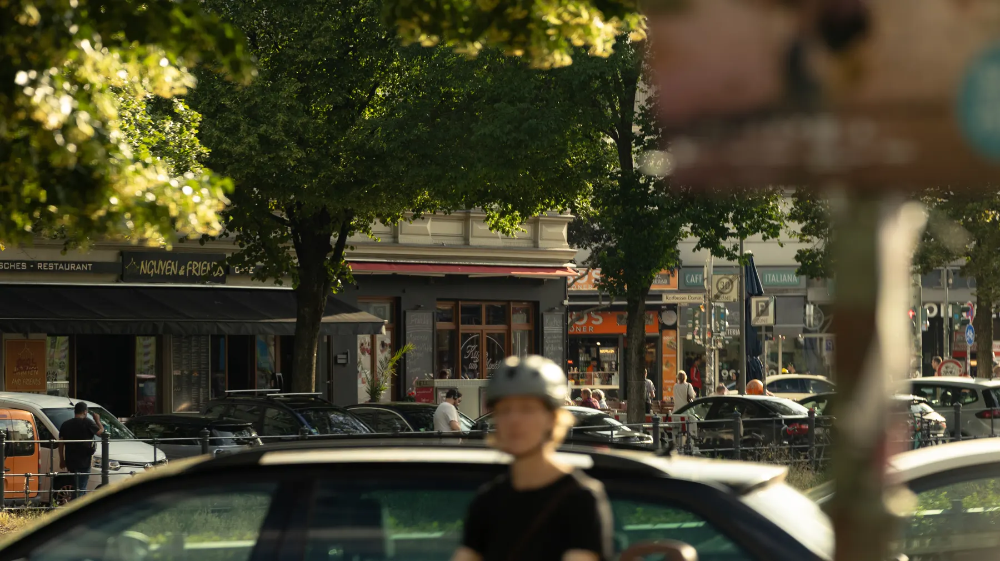
In late June, when the sun is highest over the Tropic of Cancer, the city of Berlin seems to be perpetually bathed in sunlight. Nightfall is but a temporary solace of a couple hours — varying shades of deep blue drift through the heavens, and then, in a blink, the sun rises again.
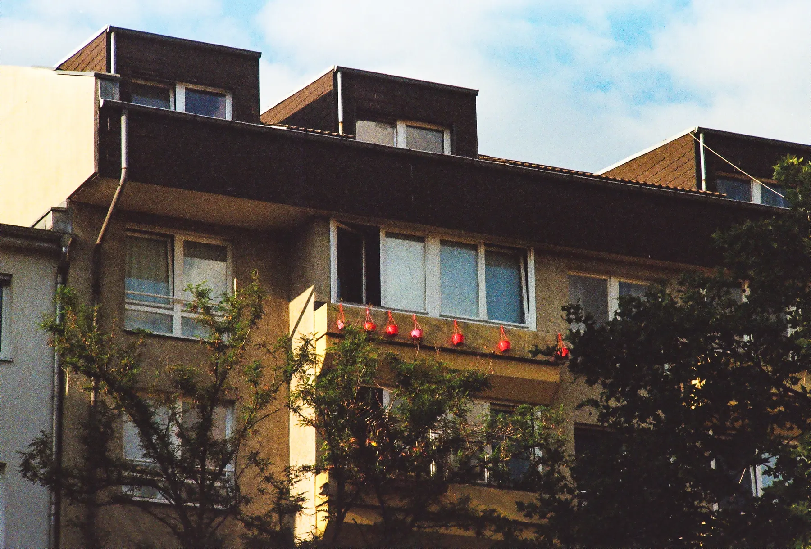
Berliners end the day at 4 P.M., leaving them with almost six hours of leisure until the sun sets around 9:30. On these warm midsummer evenings, the city slows down.
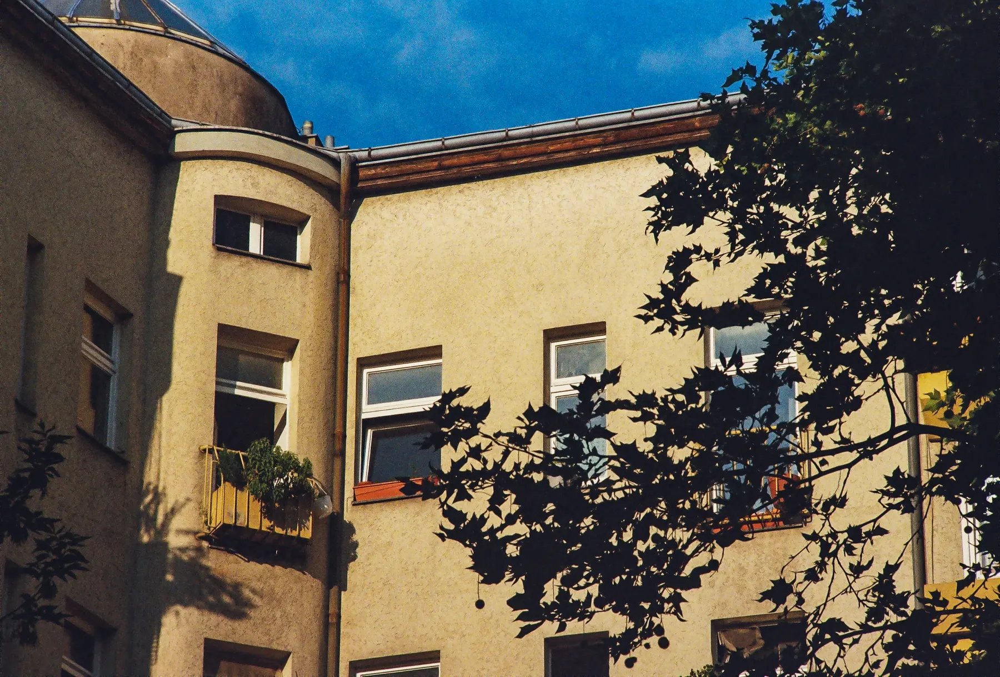
As I walk through the streets of Kreuzberg, a diverse Berlin neighborhood with a deep-rooted history of counterculture, the languid exuberance of the evening is palpable.
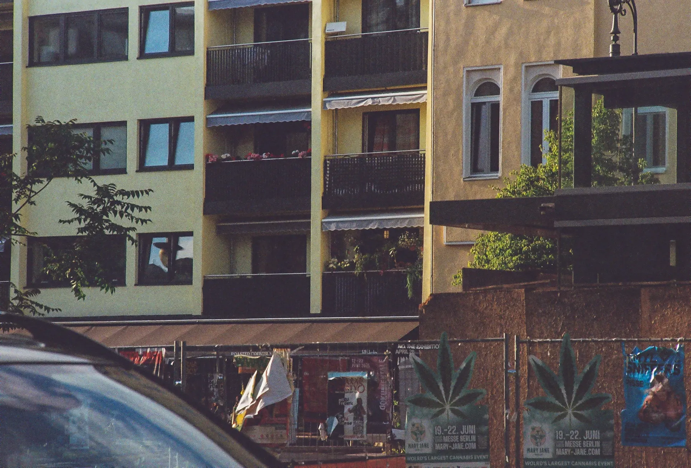
Bergmannstraße, the high street, has been turned into a pedestrian zone replete with cafes, restaurants, and boutiques. Blooming lindens line the street, rustling in the evening wind — soft, golden, and gentle rays of sunlight peek through their leaves. The fragrances of coffee, flowers, and tobacco hang low in the summer air.
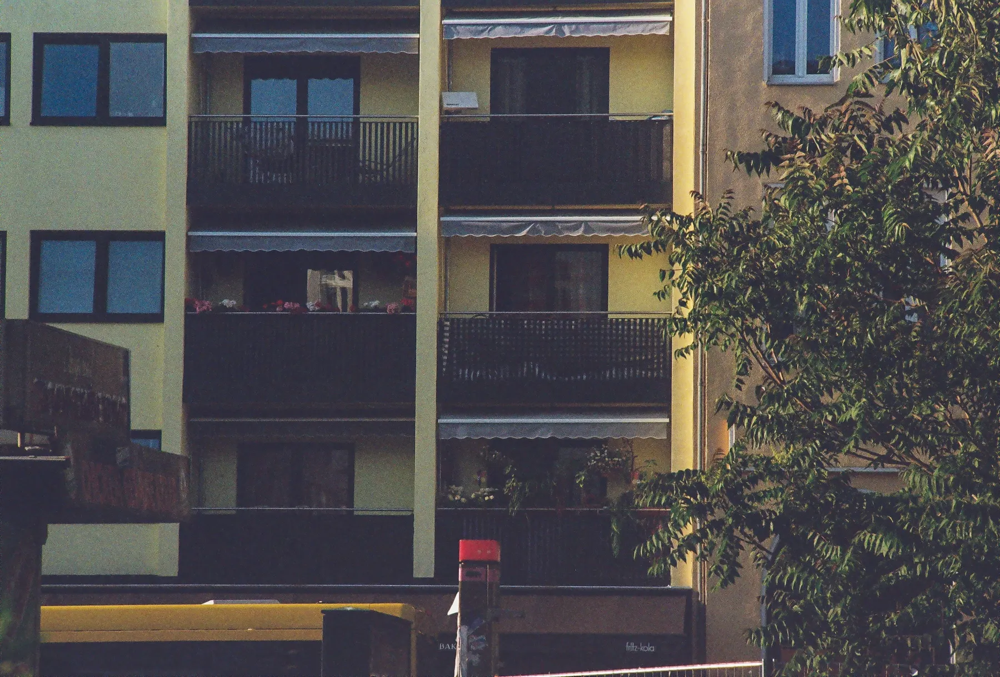
By 8 P.M., the street has been turned into a sea of “XBergers”, each with, as Michel de Certeau describes it, an innate knowledge of the streets “as blind as that of lovers in each other's arms.”
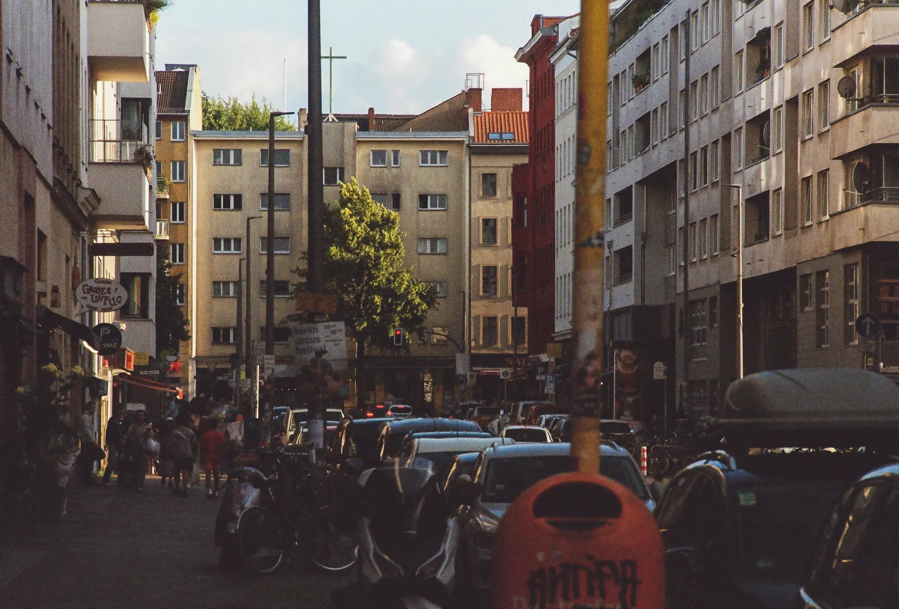
They converse in German, Turkish, English, and Arabic; they wear suits, hoodies, skinny jeans, and Yankees baseball caps; they sit at ramen spots, shawarma joints, hookah bars, and Indian restaurants — but they are all brought together by the shared familiarity of this common place.
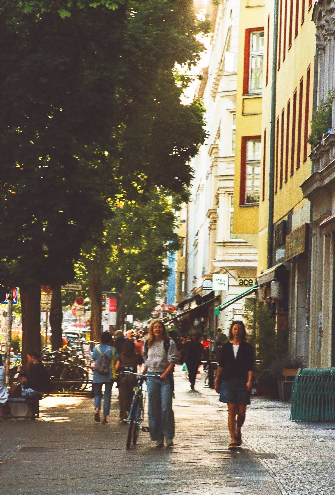
From the moment we all step onto Bergmannstraße, the street seems to take on some of our character. Through our footsteps, we become, as de Certeau puts it, an “innumerable collection of singularities” that “weave” together and mould this street through the simple act of walking on it.
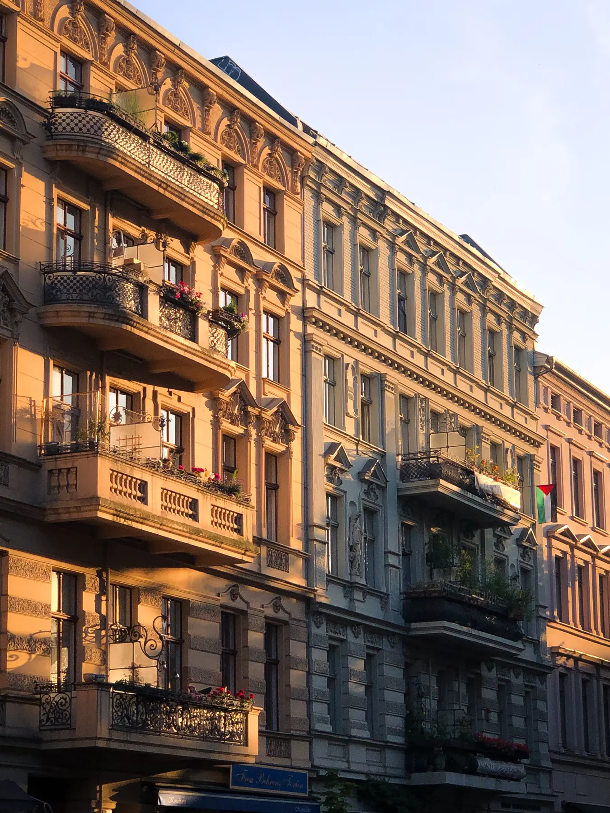
I pass the restaurant I ate at the other day, where old, moustached men now sit, passionately debating in German while sipping on tea. The waiter’s eyes flash with recognition as he sees me, and, beaming, he calls out in Urdu, “Coming again soon?” with all the frankness of an old friend. Perhaps the next time I’m in town, I respond.
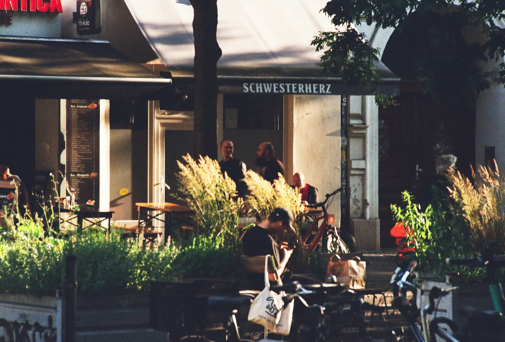
In Berlin, I may be a foreigner, but in Kreuzberg, I am just an “XBerger”, free of any label. This self-styling and openness by the district’s residents reflects their rejection of what George Simmel calls the “prejudices and petty philistinism” of small, closed circles.
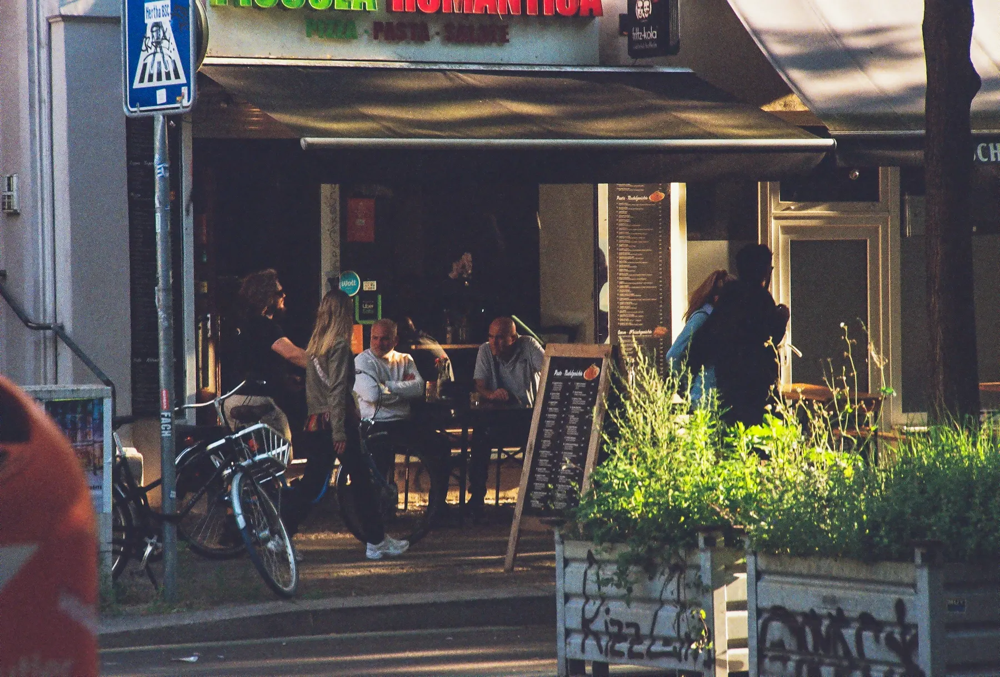
Historically detached from the greater city by the Berlin Wall, lower class, and notorious for squatters, Kreuzberg was the perfect spot for urban development. Immigrant workers, marginalized in the rest of the city, quickly integrated into the neighborhood’s counterculture as they settled permanently.
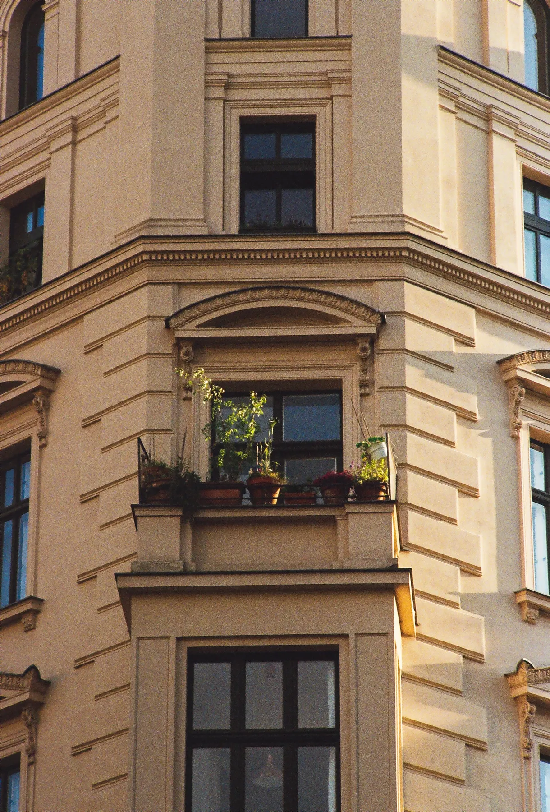
Over 30 years since the Wall came down, Kreuzberg still defies the artistic refinement and growth-oriented attitude of the “new”, manicured Berlin through its organicity — fiercely resisting the “functionalist totalitarianism” that threatens to consume its home.
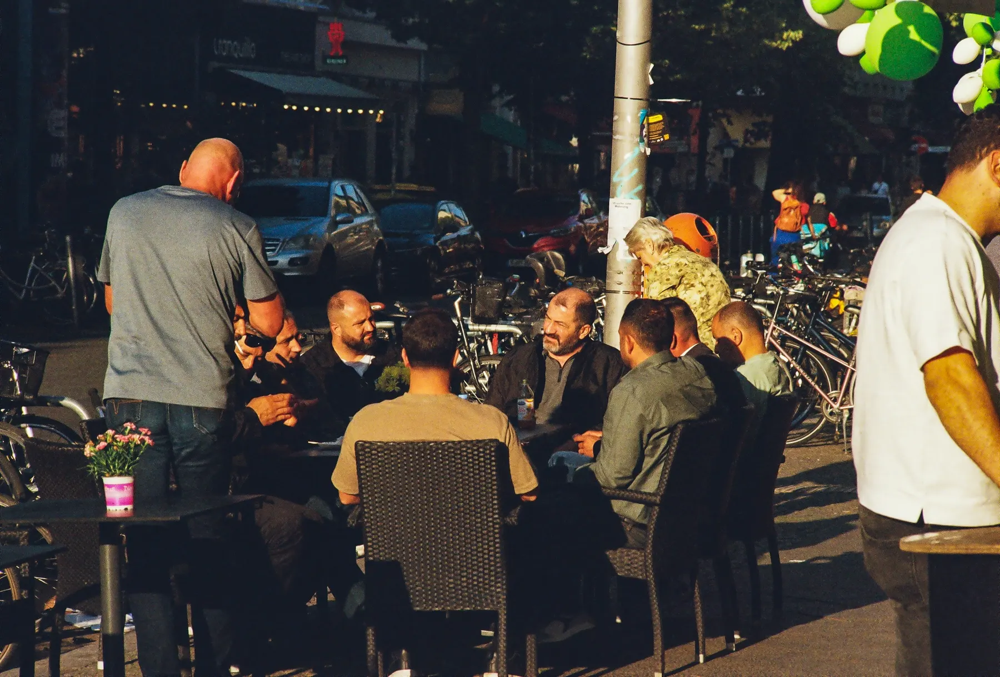
From the LGBTQ community and punk movement to immigrants and squatters, Kreuzberg has always belonged to all, even when the rest of the city hasn’t. A midsummer evening’s walk in the district makes that plainly clear, subsuming all into a warm embrace of belonging.